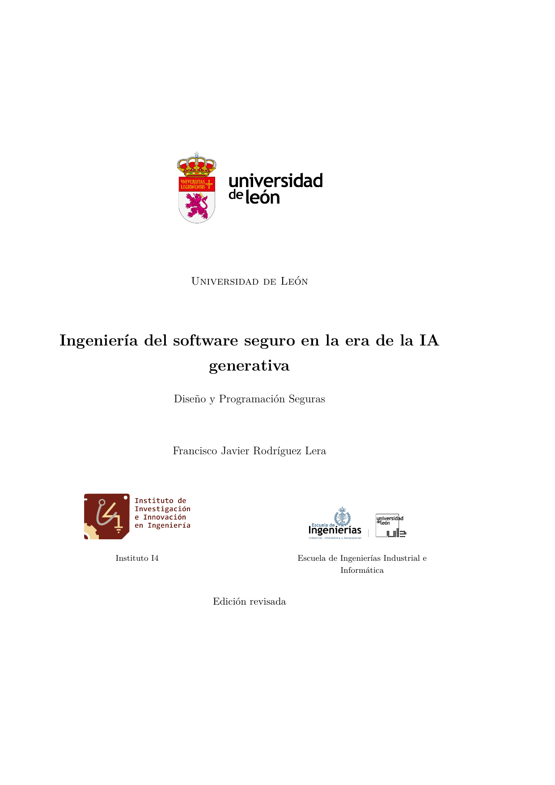

↓ Haz clic en la portada para descargar el PDF
Ingeniería del software seguro en la era de la IA generativa
Diseño y Programación Seguras
La ingeniería del software seguro es, por naturaleza, una disciplina integradora. Este libro forma ingenieras e ingenieros capaces de diseñar, razonar, verificar y evolucionar software seguro en la era de la IA generativa. Combina fundamentos teoricos -corrección, seguridad, portabilidad y evaluación reproducible- con familias de vulnerabilidades, aislamiento técnico, un pipeline de validación, verificación de código generado y una metodología docente AI-SDLC, todo apoyado en un caso transversal (conversión CSV a PDF/XLSX) y en prácticas de laboratorio.
↓ Descargar el libro (PDF)Sobre el libro
El libro está organizado en una parte teórica de trece capítulos, un caso de estudio transversal y una parte práctica de laboratorio.
Parte I - Fundamentos y método
- Cap. 1 - Introducción y motivación
- Cap. 2 - Principios clásicos y diseño seguro
- Cap. 3 - Correctitud y seguridad
- Cap. 4 - Vulnerabilidades clásicas
- Cap. 5 - Portabilidad y plataformas
- Cap. 6 - Evaluación reproducible de sistemas de IA
- Cap. 7 - El Reglamento de IA (AI Act) y los espacios controlados
- Cap. 8 - Confianza no calibrada
- Cap. 9 - Aislamiento técnico y riesgos de los agentes
- Cap. 10 - Pipeline de validación automática
- Cap. 11 - Verificación de código generado
- Cap. 12 - Metodología docente AI-SDLC
- Cap. 13 - Conclusiones
Parte II - Caso y prácticas
- Anexo A - Caso de estudio transversal (conversión documental)
- Anexo B - Prácticas de laboratorio
- Anexo C - Plantillas de registro
Diapositivas
Materiales de clase en formato de diapositivas para cada capítulo y anexo del libro. Haz clic en cualquier diapositiva para descargar el PDF correspondiente (versión alumnado).
Capítulos
Anexos
Cómo citar
Si utilizas este libro en tu investigación o docencia, puedes citarlo con la siguiente entrada BibTeX:
@book{rodriguezlera2026ia,
author = {Rodr{\'{i}}guez Lera, Francisco Javier},
title = {Ingenier{\'{i}}a del software seguro en la era de la {IA} generativa},
subtitle = {Dise{\~{n}}o y Programaci{\'{o}}n Seguras},
publisher = {Universidad de Le{\'{o}}n},
year = {2026},
note = {v1.3},
url = {https://github.com/fjrodl/disenyo-programacion-seguros},
license = {CC BY-NC-ND 4.0}
}
Uso de IA generativa
Este material se ha elaborado con asistencia de herramientas de inteligencia artificial generativa para tareas de redacción, revisión y producción de código y LaTeX. El modelo empleado en el entorno de trabajo del autor es DeepSeek-V4-Flash; en el proyecto se han considerado además otros modelos como GPT-6 (OpenAI) y Claude Sonnet 4.6 (Anthropic). Todo el contenido ha sido revisado y validado por el autor, que asume la responsabilidad sobre el texto, el código y las afirmaciones técnicas.